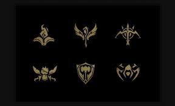

Actualmente existen más de 150 campeones con distintos aspectos y características distintas, se compran con RiotPoints(moneda dentro del juego con valor monetario real) o esencia azul(moneda de juego gratuita).
Cuentas con distintas clases o roles:
-Luchador(Offtanks): combate cuerpo a cuerpo,daño y tanque.
-Tirador(ADC): Ataque a distancia, daño por segundo, principal fuente de daño(carry)
-Mago(AP carry): Especializado en Daño magico y hechizos.
-Asesinos: Emboscadas al enemigo, daño explosivo, caza de enemigos.
-Tanque: Resistencia, aguante y absorber mayor daño posible y "engage"
-Soporte: Apoyo al equipo, visión de mapa
Cada campeón cuenta con diferentes caracteristicas y variantes entre si como: vida, maná, energia(otros), regeneracion de vida o maná(otros), daño de ataque, poder de habilidad, daño verdadero, velocidad de ataque, armadura, resistencia mágica, tenacidad,letalidad, probabilidad de crítico
En juego hay diferentes modos de conseguir dinero, que sirven para la comprade objetos que nos potencia nuestras estadisticas basese del campeón y otorgando distintos efectos, teniendo un clasificacion del mas importante al mas basico: Míticos,Legendarios y basicos.
Cada campeón cuenta con 4 habilidades propias activables o pasivas y una pasiva latente en todo momento, que ganando experiencia y subiendo de nivel(límite 18) pueden mejorarse.
Existen 14 hechizos de invocador seleccionables, solamente 2 por partida que pueden ser elegidos independientemente del personaje: Fantasmal, Curación, Claridad, Porolanzamiento, Marca, Limpiar, Teletransportación, Castigo, Barrera, Prender, Extenuación y Destello.
Con el paso del tiempo debido al bien de los jugadores se han eliminado, quitando y descartando contenido del juego como habilidades, objetos, runas y hechizos.